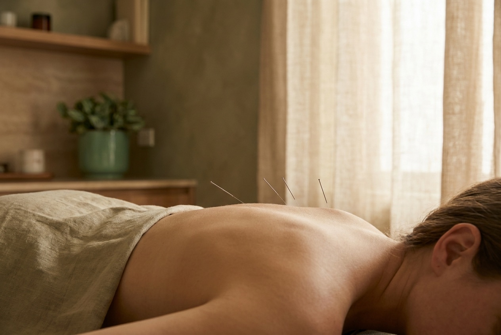
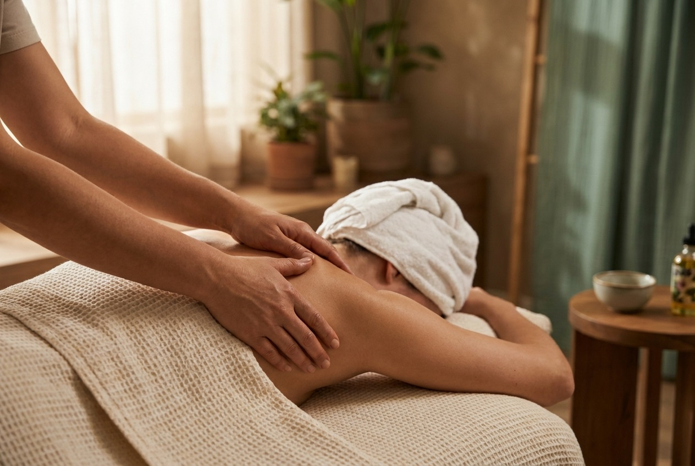
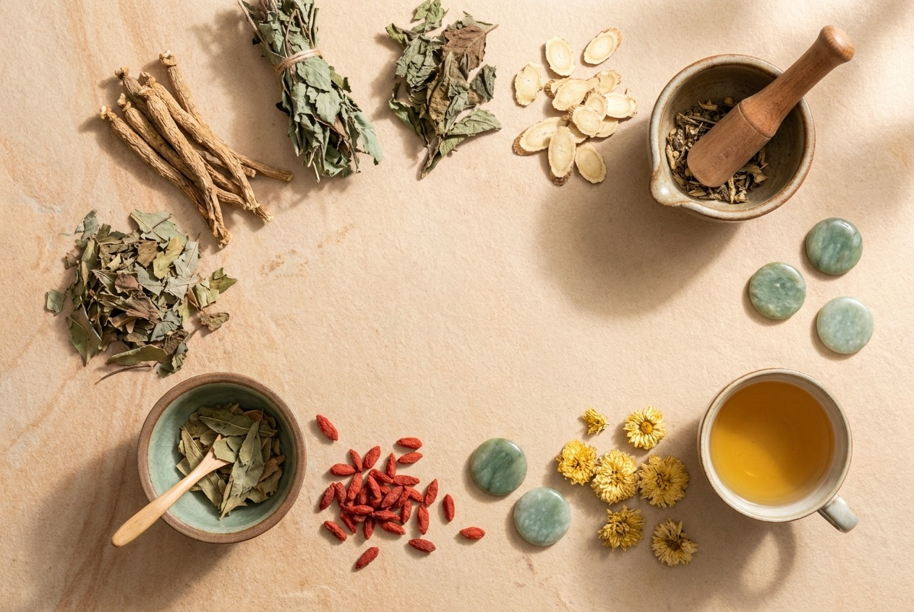

Every session starts by understanding what's actually going on. Then we draw on the right mix — needles, hands, or both — to ease it. Here's what we offer.
Fine, sterile needles placed at precise points to calm the nervous system, ease pain and release tension. Backed by 20 years of clinical Chinese-medicine practice, it's gentle, considered and genuinely relaxing.
Helps with: chronic pain, headaches, stress, poor sleep, tension.

Deep-tissue, sports, pregnancy and relaxation massage from therapists who tailor every session to your symptoms. We find what's tight, work it loose, and leave you moving easier.
Helps with: back & neck pain, sports recovery, pregnancy aches, stress.

Targeted trigger-point needling to release stubborn muscular knots and restore range of movement — often paired with massage.
Pressure-point therapy through the feet to ease the whole body and shift your nervous system into deep rest.
Traditional suction therapy that lifts and frees tight fascia, boosts circulation and relieves deep back and shoulder tension.
Sometimes the symptom isn't the whole story. A Chinese-medicine consultation looks at the full picture — sleep, energy, digestion, stress — and builds a simple plan to bring you back into balance and keep you well.
Book a consultation →
Your first acupuncture + remedial massage session includes an extra 30 minutes, free. By appointment; just mention the offer when you book.